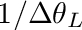
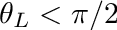
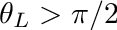

|
v1.3.14
|
Loading...
Searching...
No Matches
|
v1.3.14
|

| Dependencies | None. |
|---|---|
| CMakeLists.txt | set( PLUGINS "weberpenntree" ) |
| Header File | #include "WeberPennTree.h" |
| Class | WeberPennTree |
This plugin implements the Weber-Penn 3D procedural tree generation model, which generates a 3D leaf- and branch-resolved model of a tree. Click here for the publication describing the model. The method has many different parameters that can be adjusted to create arbitrary tree architectures. The plugin adds geometric primitives to the Helios context that defines the geometry of the generated tree.
| Constructors |
|---|
| WeberPennTree( helios::Context* context) |
The WeberPennTree class is initialized by simply passing a pointer to the Helios context as an argument to the constructor. This gives the class the ability to automatically add geometry to the context.
The parameters that define various tree geometries are specified in an XML file, which is loaded by the plug-in. When the WeberPennTree constructor is called, the defalut tree library is loaded. A list of trees in the default library is listed in the table below. Default tree parameters can be modified by the user, or custom tree libraries can be added, which is detailed in Section Custom Tree Library Files. An example tree definition is given below. The tree definition is encapsulated by the <WeberPennTree label="...">...</WeberPennTree> tag, where label gives a handle used to reference that specific tree geometry. Other tags define various parameters that determine the structure of the tree, which are detailed in the sections below.
| Tree type | Sample Image |
|---|---|
| Almond | 
|
| Apple | 
|
| Avocado | 
|
| Lemon | 
|
| Olive | 
|
| Orange | 
|
| Peach | 
|
| Pistachio | 
|
| Walnut | 
|
<?xml version=1.0?>
<helios>
<WeberPennTree label="Almond">
<Shape> 3 </Shape>
<BaseSize> 0.2 </BaseSize>
<BaseSplits> 2 </BaseSplits>
<BaseSplitSize> 0.2 </BaseSplitSize>
<Scale> 6 </Scale>
<ScaleV> 1 </ScaleV>
<ZScale> 1 </ZScale>
<ZScaleV> 0 </ZScaleV>
<Ratio> 0.02 </Ratio>
<RatioPower> 1.3 </RatioPower>
<Lobes> 5 </Lobes>
<LobeDepth> 0.1 </LobeDepth>
<Flare> 0.25 </Flare>
<Levels> 3 </Levels>
<nSegSplits> 0 0 0 0 </nSegSplits>
<nSplitAngle> 40 10 10 0 </nSplitAngle>
<nSplitAngleV> 0 0 0 0 </nSplitAngleV>
<nCurveRes> 8 5 3 1 </nCurveRes>
<nCurve> -60 -40 10 </nCurve>
<nCurveV> 0 0 0 0 </nCurveV>
<nCurveBack> 0 -70 0 0 </nCurveBack>
<nLength> 1 0.6 0.4 0.3 </nLength>
<nLengthV> 0 0 0 0 </nLengthV>
<nTaper> 1 1 1 1 </nTaper>
<nDownAngle> 0 50 30 0 </nDownAngle>
<nDownAngleV> 0 0 0 0 </nDownAngleV>
<nRotate> 95 95 95 95 </nRotate>
<nRotateV> 0 10 10 0 </nRotateV>
<nBranches> 0 50 30 20 </nBranches>
<Leaves> 16 </Leaves>
<LeafFile> plugins/weberpenntree/leaves/AlmondLeaf.png </LeafFile>
<LeafScale> 0.2 </LeafScale>
<LeafScaleX> 0.3 </LeafScaleX>
<WoodFile> plugins/visualizer/textures/wood2.jpg </WoodFile>
</WeberPennTree>
</helios>The WeberPennTree member function WeberPennTree::buildTree() is used to add and instance of a tree from the library. This function takes two required arguments in addition to one optional argument. The user must specify 1) the label for the tree as defined in the tree library XML file (see above), and 2) the (x,y,z) position to place the tree (note that this position is with respect to the base of the trunk). A third optional argument specifies a scaling factor to apply to the tree, where scale<1 makes the tree smaller, and scale>1 makes the tree bigger. The buildTree function returns a uint that gives an identifier for the particular instance of the tree. This can be used later to reference the tree.
The tree building process involves adding primitives to the Helios context that comprise a particular tree geometry. The UUIDs for the primitives that comprise trees can be queried via the functions getTrunkUUIDs(), getBranchUUIDs(), and getLeafUUIDs() along with the identifier of the tree.
| Tree Building Functions |
|---|
| uint buildTree( const char* treename, helios::vec3 origin ) |
| uint buildTree( const char* treename, helios::vec3 origin, float scale ) |
#include "Context.h"
#include "WeberPennTree.h"
int main( void ){
Context context; //declare the context
User-specified XML tree library files can be utilized via the WeberPennTree::loadXML() function. The argument to this function is an absolute or relative path to the XML file to be loaded. Note that as always relative file paths are relative to the project's build directory.

The general idea behind the tree geometries is by specifying parameters that define the growth pattern of recursive branching levels (see figure above). The base structure of the tree is the trunk, which is the 0th recursive level. Braches are considered "children" of their "parent", which in this case is the trunk. The first branching level is dependent on the size and orientation of the trunk. Further levels of recursion are created by generating branches that are children of the previous branching level. Each branching level follows the same set of rules but has different parameters that define the way they grow. The number of recursion levels is given by the parameter Levels. Importantly, the last level of recursion always corresponds to leaves, which follows the same general rules as branches. So setting Levels = 3 would give a trunk, two branching levels, plus leaves.
Many parameter names are prepended with the letter "n", which indicates that these parameters vary with recursion level. For example, the parameter Scale is a scaling factor applied to the whole tree, and thus it does not depend on the recursion level. The parameter nBraches gives the maximum number of branches for each recursion level (note the "n" in the name), and therefore can have a different value for each recursion level. Below, each recursion level will be referred to by replacing "n" by the level number (e.g., 0Branches, 1Branches, 2Branches, etc.).
Many parameter names are appended with the letter "V", which indicates that the parameter indicates a random range over which a value varies. For example, if Scale = 10 and ScaleV = 1, the scale factor would randomly vary between 9 and 11. Setting ScaleV to 0 would mean that there is no variation and the scale factor is always 10.

| Parameter | Description |
|---|---|
| Scale | Scaling factor to specify overall tree size. Scale is generally the height of the tree. |
| 0Length | Length of the tree trunk as a fraction of scale. Usually, 0Length is set to 1 (i.e., 100%). |
| BaseSize | Percentage of the tree height before vegetation/branches start (0<BaseSize<1). For a tree with no trunk, BaseSize=0. For a tree where vegetation is only present in the upper half of the tree, BaseSize=0.5. |
| Ratio | Specifies the trunk radius at the base as a fraction of the length of the trunk. So Ratio=0.01 would have a trunk with radius at base of 1% of the trunk length. |
| 0Taper | Reduction factor for trunk radius moving away from base (0<=0Taper<=1). Setting 0Taper to 0 results in a cylindrical trunk, setting 0Taper to 1 results in a conical trunk, and setting 0Taper between 0 and 1 gives a combination of the two. |
| Flare | Expansion of the trunk radius at the base by a factor of 1+Flare. |
| Shape | Flag corresponding to desired tree crown shape. See table below for available tree crown shapes. |
| BaseSplits | Number of trunk splits. For example, BaseSplits=1 gives on split and two distinct "scaffolds" or secondary trunks. BaseSplits=2 gives three distinct secondary trunk branches. |
| BaseSplitSize | If BaseSplits>0, BaseSplitSize is the distance from the base of the tree to the split as a fraction of the height of the tree (0<=BaseSplitSize<=1). |
| 0SplitAngle | Angle from vertical (degrees) of the split branch with respect to vertical. |
Creating new tree geometries typically starts by considering the overall size and shape of the tree. The above image shows a schematic sketch of the relevant parameters used to define these features.
The height of the tree in meters is given by the ‘Scale/ScaleV’. The height of the trunk portion with no branches is given by ‘BaseSize’, which is a fraction of the whole tree height. For example, if Scale=10 and BaseSize=0.4, the first 4 meters of the tree trunk would have no branches.
The trunk radius at the base is given as a fraction (Ratio) of the total height of the tree. For example, Ratio = 0.05 gives a trunk radius that is 5% of the total height of the tree. The trunk radius can taper along its lenght according to the parameter ‘0Taper’, with 0<=0Taper<=1. 0Taper=0 gives no tapering, and 0Taper=1 tapers the trunk to a point (i.e., radius=0).
The shape of the tree is given by the ID parameter 'Shape'. There are 8 supported tree shapes, which are given in the table below. One important caveat is when BaseSplits is greater than 0, in which case the shape applies to each individual split branch and not necessarily to the tree as a whole. So BaseSplits=0 and Shape=1 (spherical) would result in one split and two spherical crown sub-shapes.
| Shape | Description | Sketch |
|---|---|---|
| 0 | Conical | 
|
| 1 | Spherical/Ellipsoidal | 
|
| 2 | Hemispherical | 
|
| 3 | Cylindrical | 
|
| 4 | Tapered Cylindrical | 
|
| 5 | Flame | 
|
| 6 | Inverse Conical | 
|
| 7 | Tend Flame | 
|


The tree model uses a PNG texture mask to visualize leaves. This is a PNG image of the leaf with a transparent background. An example leaf mask is given in the image below. New leaf masks can be created using Gimp fairly easily. Simply find an image of the leaf, open in Gimp, add an alpha channel to the image, use the ‘Fuzzy Select Tool’ to select the background, then go to Edit->Clear, and export in .png format. There are many tutorials online describing how to do this in more detail. Note that the leaf should be oriented as shown in the image below for consistency: petiole pointing to the left. Also note that the petiole is typically cropped out of the image.
By default, the Weber-Penn tree model will create a semi-random leaf angle distribution by rotating leaves around its parent branch according to the parameters set for that particular tree. However, this is typically not realistic for how leaves arrange themselves in nature, and it is often desirable to specify a leaf angle distribution based on actual data. A custom leaf angle (inclination) distribution funciton can be specified for a given tree type in the tree library XML file using the tag '<LeafAngleDist> ... </LeafAngleDist>'. The elements within the tag should be probability densities of leaf inclination for discrete angle classes ranging from  to  rad.
Here is an example: Imagine that we wanted to have N=18 discrete leaf angle bins in our leaf angle PDF . The width of one discrete bin would be  rad. Each of the 18 bins of our PDF should give the probability density that we have a leaf inclination angle that falls within that bin. By definition, the following should hold for our PDF:
rad. Each of the 18 bins of our PDF should give the probability density that we have a leaf inclination angle that falls within that bin. By definition, the following should hold for our PDF:
If this condition is not met by the PDF input by the user, the program will ignore it and revert to the default behavior.
As a simple example, imagine we had only one leaf with an inclination of  rad. This leaf would fall in the first discrete bin of , which would have a value of
rad. This leaf would fall in the first discrete bin of , which would have a value of  and all other bins would be zero.
and all other bins would be zero.
For a typical almond tree, the PDF for N=18 is tabulated below. Note that we have the capability to have leaves pointing upward from their base (  ) or leaves pointiing downward from their base (
) or leaves pointiing downward from their base (  ). For simplicity, the distribution below considers only upward-facing normals.
). For simplicity, the distribution below considers only upward-facing normals.
 bin (degrees) bin (degrees) |  |
|---|---|
| 0-10 | 0.229 |
| 10-20 | 0.665 |
| 20-30 | 0.917 |
| 30-40 | 0.945 |
| 40-50 | 0.865 |
| 50-60 | 0.745 |
| 60-70 | 0.619 |
| 70-80 | 0.424 |
| 80-90 | 0.315 |
| 90-100 | 0 |
| 100-110 | 0 |
| 110-120 | 0 |
| 120-130 | 0 |
| 130-140 | 0 |
| 140-150 | 0 |
| 150-160 | 0 |
| 160-170 | 0 |
| 180-180 | 0 |
This data would be input into the tree library XML file as follows:
<?xml version=1.0?>
<helios>
<WeberPennTree label="Almond">
<!--
Many other parameters here
-->
<LeafAngleDist>0.2290 0.6650 0.9170 0.9450 0.8650 0.7450 0.6190 0.4240 0.3100 0 0 0 0 0 0 0 0 0</LeafAngleDist>
</WeberPennTree>
</helios>